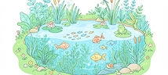

Pengertian Ekosistem
•••Pelajari definisi ekosistem di sekitar kita
Mulai Belajar
Kamu sudah menyelesaikan 2 dari 5 tahap pembelajaran.
Ayo lanjutkan!
Lanjutkan Belajar →
Pelajari definisi ekosistem di sekitar kita
Mulai Belajar
Kenali lingkungan hidup dan tak hidup ekosistem
Mulai Belajar
Pahami hubungan makan dan dimakan dalam ekosistem.
Mulai Belajar